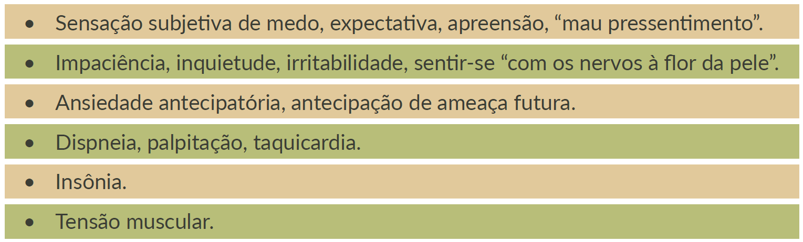

Outra linha de pesquisas pré-clínicas e clínicas recentes sugere também um papel do sistema canabinoide na modulação da ansiedade. Os resultados obtidos com a experimentação de um agonista e de um antagonista do receptor canabinoide apoiam a hipótese de que o sistema endocanabinoide participa da regulação da ansiedade em humanos. Os principais sintomas estão listados no quadro a seguir.
Quadro 2 - Principais sinais e sintomas dos transtornos de ansiedade.
